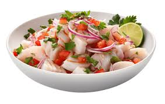

El ceviche es considerado el plato bandera del Perú. Se prepara con pescado fresco cortado en trozos, marinado en jugo de limón con sal, ají y cebolla morada.
Se acompaña con camote, choclo, lechuga y cancha serrana. Su sabor fresco y ácido lo hace uno de los platos más reconocidos internacionalmente.
